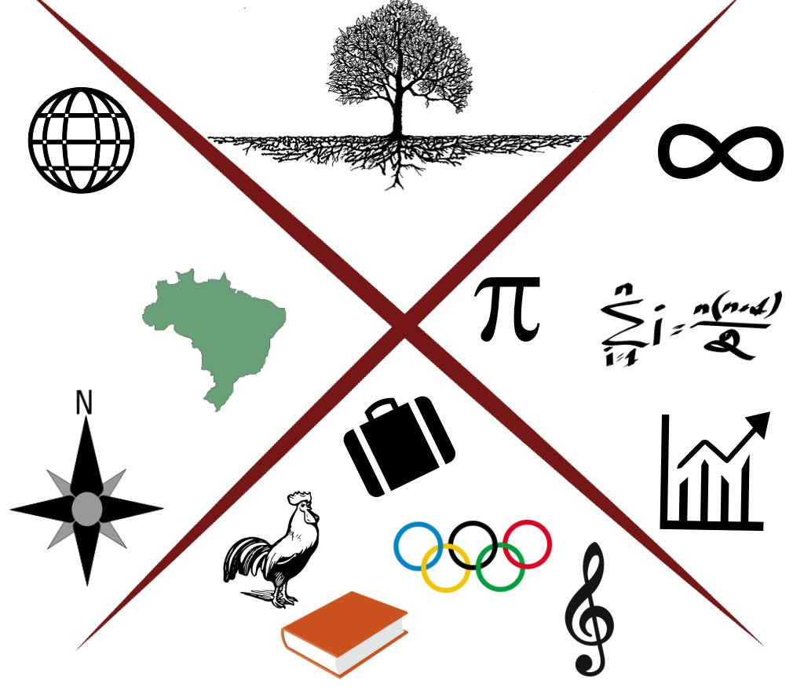

Professor Paulo Fernando
Disciplinas
Cálculo Numérico
Estatística para Geografia
Caixa de ferramentas
Linguagem R
Diversos
Portais de dados
Links
Índice de Pobreza Multidimensional
Atlas COVID19
Sobre
Contato
responsive web templates
Linguagem r
Deixo alguns scripts para funções específicas e outros materiais de referência de apoio ao uso do R
Search:
Funcionalidade
Material
Data de atualização
Ler e escrever dados da área de transferência
Script
2020-08-21
Matemática simbólica no R
Script
2020-08-21
Troca de caracteres especiais e acentos
Link
2020-09-18
Showing
entries
(filtered from
total entries)
Sobre
Lattes
ORCID